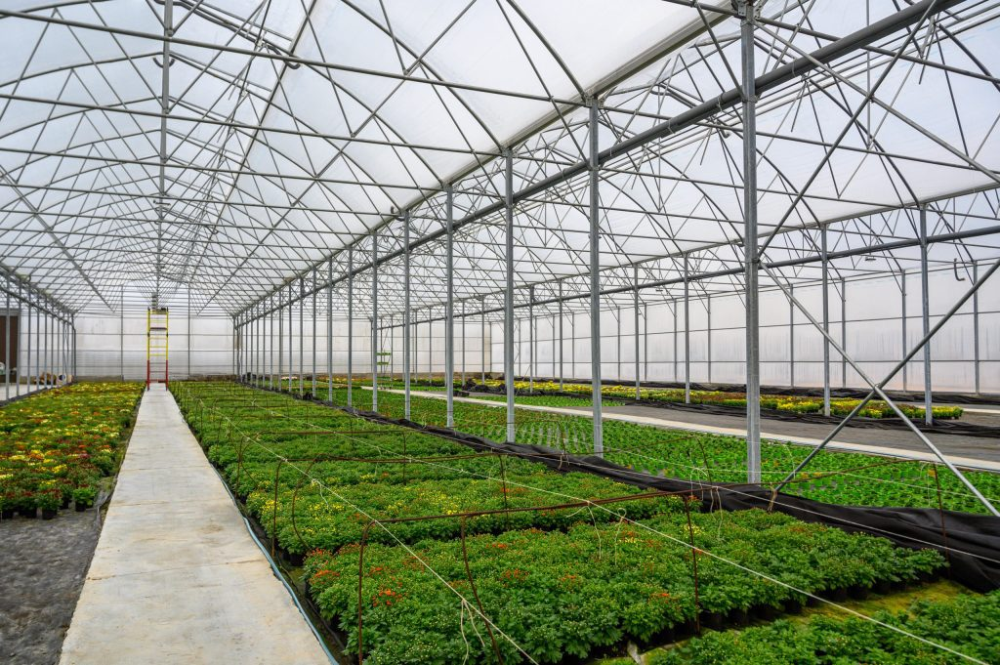

O‘zbekiston Prezidenti «Issiqxona xo‘jaliklari faoliyati samaradorligini oshirish va eksport hajmini ko‘paytirishga doir qo‘shimcha chora-tadbirlar to‘g‘risida»gi farmonni imzoladi. Hujjatda issiqxona sohasidagi ishlab chiqarishni barqarorlashtirish va eksportni kengaytirishga qaratilgan bir qator soliq va ma’muriy yengilliklar nazarda tutilgan.
Farmonga ko‘ra, 2025-yil 1-oktyabr holatiga mavjud soliq qarzlari muzlatilib, ularni foiz qo‘shilmagan holda 2028-yil yakuniga qadar to‘lash imkoni beriladi. Shuningdek, issiqxona xo‘jaliklari 2026-yil 1-yanvardan boshlab 2028-yil yakunigacha ijtimoiy soliqni faqat 1 foiz stavkada to‘laydi. Bu choralar sohadagi iqtisodiy bosimni yengillatish va ishlab chiqaruvchilarni qo‘llab-quvvatlashga qaratilgan.

Farmonda belgilangan maqsadlarga ko‘ra:
Shuningdek, issiqxona xo‘jaliklarini tabiiy gaz bilan kafolatli ta’minlash orqali mahsulot yetishtirish hajmini 2026-yilda 620 ming tonna, 2027-yilda esa 670 ming tonnadan oshirish ko‘zda tutilgan.
Bundan tashqari, 2026-yilda qo‘shimcha 20 ming gektar, 2027-yilda 15 ming gektar yer maydonida meva va sabzavot ekish ishlari amalga oshiriladi. Mahsulotlar eksporti ulushi esa 30 foizdan 70 foizgacha oshirilishi rejalashtirilgan.
Farmon sohada faoliyat yuritayotgan tadbirkorlarga katta moliyaviy yengillik yaratib, issiqxona xo‘jaliklarining barqaror faoliyat yuritishiga xizmat qilishi kutilmoqda.